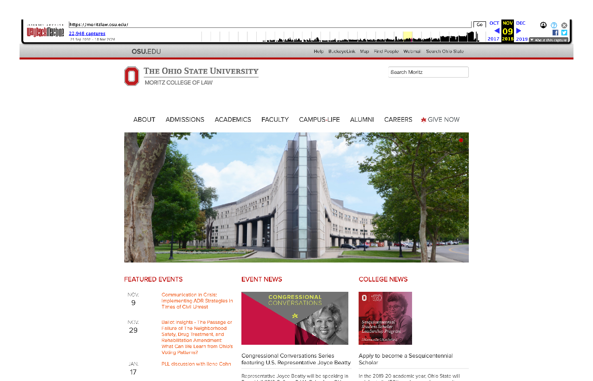
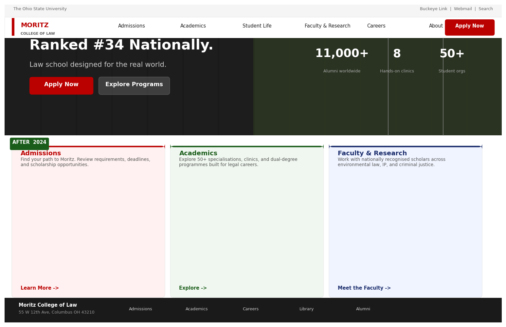

Ohio State Website Migration
The Ohio State University, Moritz College of Law
An outdated, hard-coded web platform was creating friction for users and hindering conversion across both the public-facing college website and the internal staff and student intranet. Content updates were slow, inconsistent, and bottlenecked by a total reliance on technical staff — with zero tolerance for downtime or content loss during the transition.
Ranked #34 nationally, Moritz College of Law needed platforms that matched its standing: a public website that competed for prospective students, and an intranet that actually served the people who used it daily.
Platform Migration: Transition both the public site and the legacy intranet to a flexible, maintainable CMS.
Information Architecture: Redesign the intranet structure to serve two distinct user groups (Students vs. Staff/Faculty) and rebuild the public site around conversion and discoverability.
Brand Governance: Build a self-serve communications toolkit to empower individual departments to produce on-brand materials without relying on the central design team.
1. Public-Facing Website Redesign
The redesign replaced a dense, three-column text layout and static building photo with an editorial, people-first design. The new site leads with a full-bleed faculty story and a prominent call to action — replacing the dated column format with a magazine-style card grid that surfaces news and events without burying them. Navigation was simplified, and the whole structure moved into CMS, giving the team editorial control they hadn't had before.


2. Audience-Segmented Intranet
The intranet homepage was designed around two immediate, distinct user paths so visitors could self-select their journey right away.
For Students: A consolidated, highly scannable dashboard — curriculum planning, directories, and common request forms converted into visual icon-cards, drastically reducing click-depth for high-frequency actions.
For Staff & Faculty: A dedicated administrative hub covering HR, IT, grant applications, and committee access, backed by a persistent, searchable directory.


3. Self-Serve Design Toolkit
To solve the communication bottleneck, I built a centralised, branded asset hub. This provided every department with downloadable print and digital templates, curated image libraries, and logo files — allowing non-designers to produce standardised, on-brand materials independently, eliminating the central team's backlog.

6-Year Tenure
- Full project lifecycle: Managed end-to-end delivery — aligning cross-functional requirements, coordinating stakeholders, overseeing the CMS build, and ensuring zero content loss during migration
- UX & IA strategy: Defined the audience segmentation, navigation hierarchy, and underlying content taxonomy for both the public site and intranet
- Accessibility compliance: Built and maintained all CMS page templates to strict accessibility standards throughout the project and post-launch
- Operational management: Coordinated ongoing content updates, production schedules, and cross-departmental requests over six years, alongside managing access permissions and distribution lists
Delivered on time with zero downtime and no content loss. The new public-facing site drove measurable UX improvements and conversion rate gains within the first quarter post-launch, with prospective student enquiries increasing as a direct result of the redesigned journey. The CMS migration granted the college full editorial independence, and the self-serve toolkit virtually eliminated ad hoc template requests — ensuring a unified brand presence across all college channels.